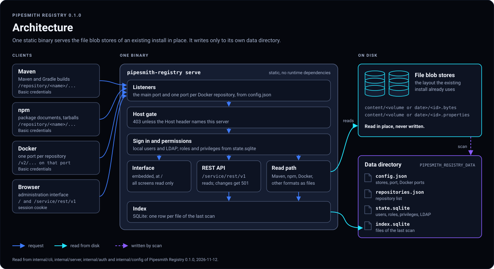
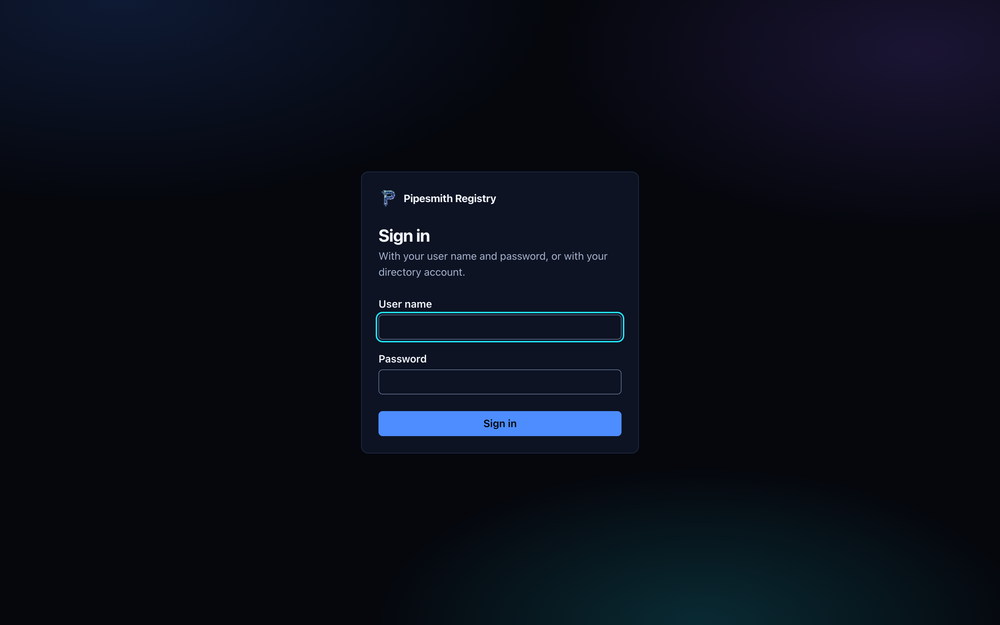
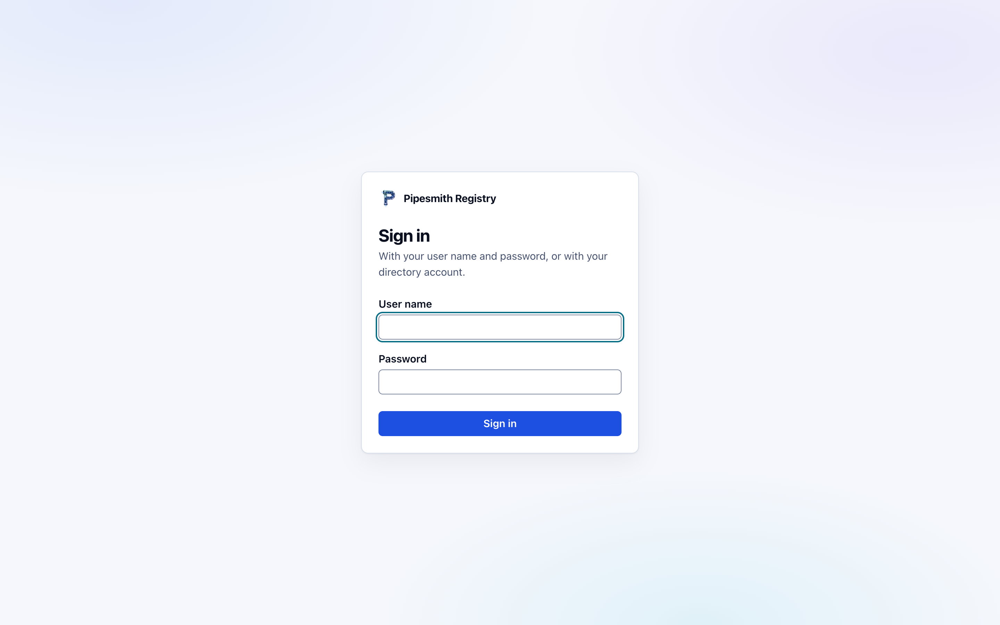
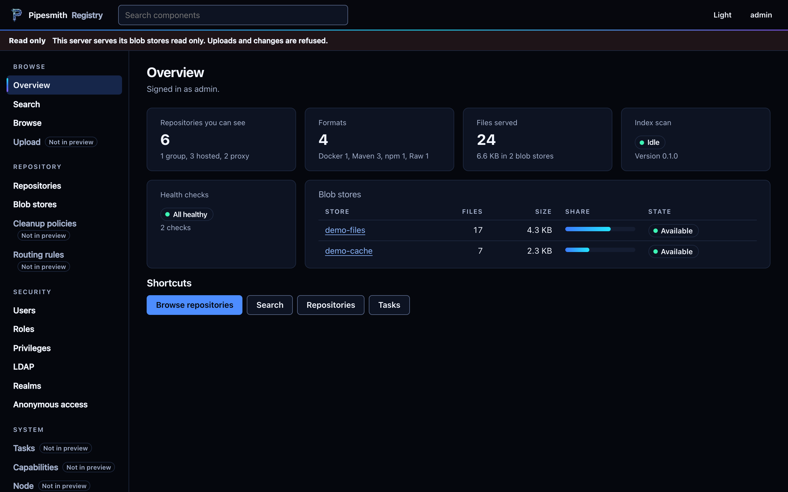
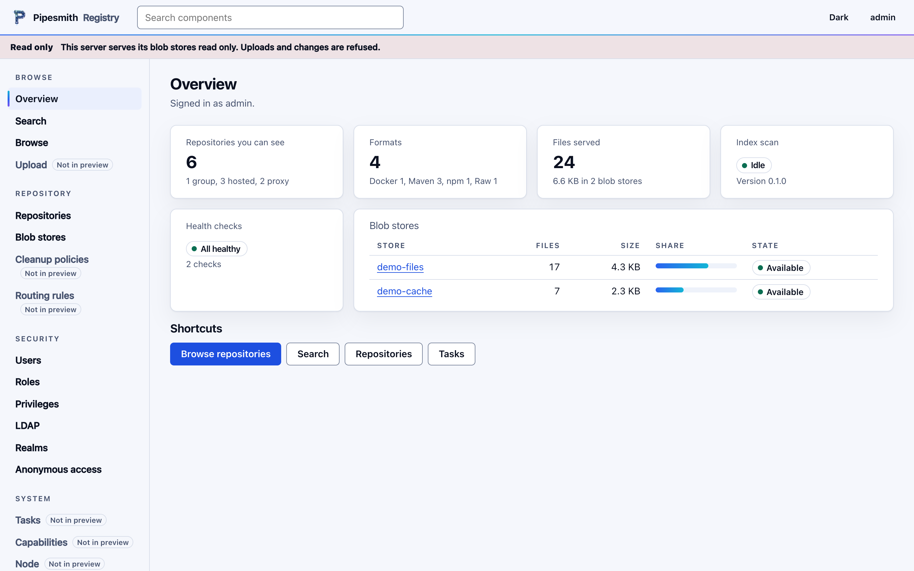
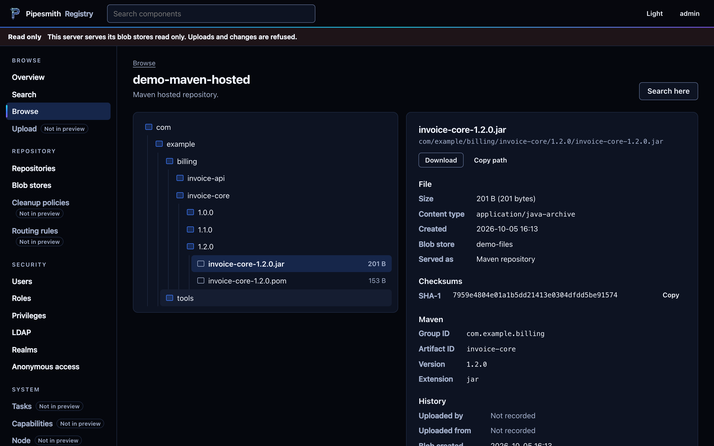
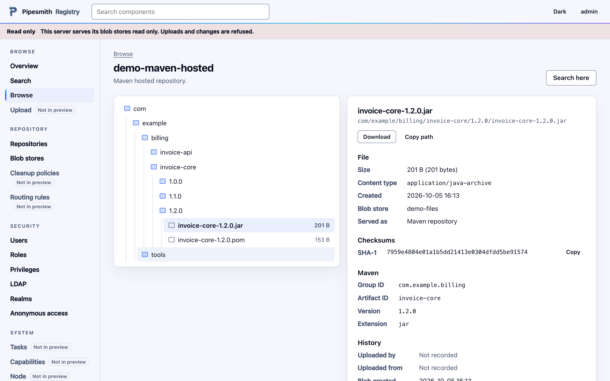
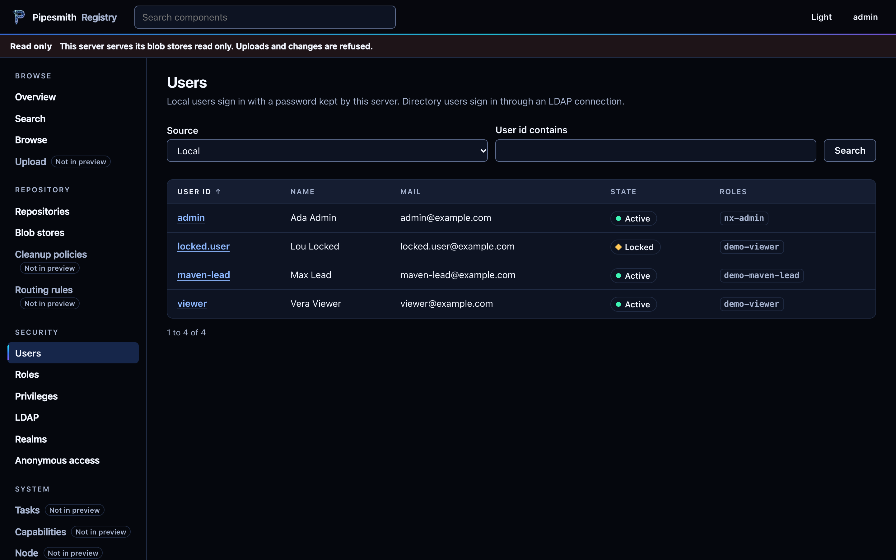
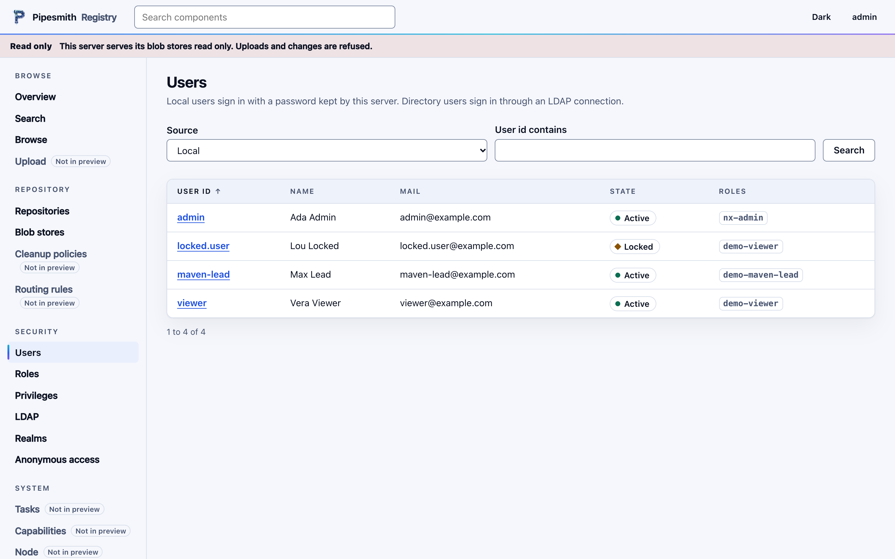

Pipesmith Registry Manual
Version 0.1.0. Pipesmith Registry serves the file blob stores of an existing artifact repository install, read only, from one static binary.
Overview
An existing artifact repository install keeps its files in file blob stores on disk. Pipesmith Registry reads those stores in place, in the layout the install already uses, and never writes to them. It keeps its own state in a separate data directory.
scan walks a store and writes one row per live file into an SQLite index. serve answers requests from that index and reads the bytes from the store. Files added to a store after the last scan appear after the next one.

Formats
| Format | What 0.1.0 serves |
|---|---|
| Maven | Files under /repository/<name>/. A group repository answers from its members in their order and merges maven-metadata.xml across them. |
| npm | Package documents and tarballs. Tarball URLs in a document point at this server. Group repositories merge the documents of their members. |
| Docker | The registry API for pulls (manifests, blobs, tags) under /v2/ on one port per Docker repository, and under /repository/<name>/v2/. |
| Other formats | PyPI, raw and every other format: the stored files by their path. There is no format logic for them in 0.1.0. |
A directory URL answers with an HTML listing of at most 10,000 entries; ?offset= selects the next page.
Read Only
Every upload and deploy to /repository/ answers 405. Every change through the REST API answers 501 with the area it belongs to. The interface marks the areas this release does not serve with "Not in preview".
Install
Each release on GitHub holds these files:
| File | What it is |
|---|---|
pipesmith-registry-linux-amd64, -linux-arm64, -darwin-arm64 | The binary for each platform, built with CGO_ENABLED=0. It needs no shared library and no runtime. |
SHA256SUMS | The SHA-256 of every other file. |
sbom.spdx.json, sbom.cdx.json | The software bill of materials of the source tree, in SPDX and CycloneDX. |
image.tar | The container image, as docker save writes it. |
Verify
VERSION=0.1.0
BASE=https://github.com/mirosso25/pipesmith-registry/releases/download/v$VERSION
curl -fLO "$BASE/pipesmith-registry-linux-amd64"
curl -fLO "$BASE/SHA256SUMS"
sha256sum --check --ignore-missing SHA256SUMSOn macOS the checksum command is shasum -a 256 --check --ignore-missing SHA256SUMS. Release 0.1.0 is not signed. Signed releases come with the self update in a later version; the checksum only shows that the download is complete.
Place
The commands of this section, of Service and of Network have not run on a Linux host yet.
sudo install -d -m 0755 /opt/pipesmith-registry
sudo install -m 0755 pipesmith-registry-linux-amd64 /opt/pipesmith-registry/pipesmith-registry
sudo useradd --system --home-dir /var/lib/pipesmith-registry --shell /usr/sbin/nologin pipesmith-registry
sudo install -d -m 0700 -o pipesmith-registry /var/lib/pipesmith-registryThe service user needs read access to the blob store directories, usually through a group, and write access to its data directory only. Check the read access as that user before the first scan:
sudo -u pipesmith-registry ls /srv/blobs/default/contentContainer
docker load -i image.tar loads the image. It holds the binary at /usr/local/bin/pipesmith-registry on a distroless static base, runs as user 65532 and starts serve. The image has not been run against a blob store yet. A container needs PIPESMITH_REGISTRY_DATA on a writable mount and the stores mounted read only. It also needs the settings of the Network chapter, because 127.0.0.1 inside a container cannot be reached from outside.
Source
The build runs in the Go container that tools/go.sh pins by digest. Docker must run, and DOCKER_CONFIG must name a configuration that asks for no credentials.
mkdir -p work/docker-quiet && printf '{}\n' > work/docker-quiet/config.json
export DOCKER_CONFIG="$PWD/work/docker-quiet"
tools/go.sh check
tools/go.sh buildcheck runs gofmt, go vet and the tests with the race detector. build writes the three binaries to bin/.
Configure
Data Directory
Every command reads the data directory from PIPESMITH_REGISTRY_DATA. Without it the binary uses data in the parent of the folder that holds the binary: for /opt/pipesmith-registry/bin/pipesmith-registry that is /opt/pipesmith-registry/data. Set the variable wherever the binary runs.
| File | Holds | Written by |
|---|---|---|
config.json | Bind address, port, attached stores, Docker port overrides | store add, store remove, repos port |
repositories.json | Repository list with format, type, group members and Docker ports | import-settings, import-state, import |
state.sqlite | Users with password hashes, roles, privileges, LDAP connections, realms, anonymous setting | import, import-state |
index.sqlite | One row per live file of each store | scan |
The commands create these files with mode 0600, except the index. The command pipesmith-registry config prints the resolved paths and settings; config --check lists problems; config --json prints the same as JSON.
Commands
| Command | Does |
|---|---|
serve [--port N] [--bind ADDR] [--server-names NAMES] [--ask-ldap-password] | Runs the server in the foreground. |
store add <name> --kind <kind> --root <path> | Attaches a store. See Stores. |
store list, store remove <name> | Lists the stores with their indexed files; detaches one and drops its rows from the index. |
scan [<name>] | Scans one store, or all of them, into the index. |
repos [--json] | Lists the repositories with format, type, Docker port, files and size. |
repos port <name> <port|none> | Sets or clears the Docker port of a repository. It takes effect at the next start. |
import-settings <file> | Writes repositories.json from a repository settings export. Credentials are not taken over. |
import-state --settings <file> | Writes the repositories of a settings export into state.sqlite and repositories.json. |
import <directory> | Checks an export of the old database and writes its records. See Users. |
state show | Prints the counts and records of state.sqlite as JSON, without password hashes. |
docker-check <name> | Reads every stored manifest of a Docker repository and lists the blobs and manifests it names that are not in the index. Exit code 1 when one is missing. |
config [--get KEY | --check | --json | --docker-ports] | Shows the configuration. --docker-ports prints one line per Docker listener of the next start. |
version, help | Prints the version or the help. |
Ports
The main port is 8793 unless config.json, PIPESMITH_REGISTRY_PORT or serve --port says otherwise; the flag wins. Each Docker repository with a port gets a listener of its own. The port comes from repos port first, else from the repository definition. All listeners open before the server answers anything, and if one port is taken, none of them opens and serve stops with "Address already in use". Port 8791 is refused in this release.
Next to a running old service, its Docker ports are usually taken. Move each one before the first start:
pipesmith-registry config --docker-ports
pipesmith-registry repos port demo-docker 15001Stores
store add knows two kinds. One reads a file blob store in the layout of the existing install. Its content/ folder holds a .properties file and a .bytes file per blob. The blobs sit in volume and chapter folders or in date folders. pipesmith-registry store add --help prints the name of that kind. The other kind, directory, serves a plain tree with one folder per repository.
pipesmith-registry store add default --kind <blob store kind> --root /srv/blobs/default
pipesmith-registry store add exports --kind directory --root /srv/exports --repos demo-maven-hosted,demo-rawGive a blob store the name the existing install uses for it. The blob store screen then shows one entry per store. The option --repos limits a directory store to the named folders. The option --manifest <path> gives a directory store the SHA-1, content type and creation time of its files. It reads a file or a directory of part-*.tsv files, plain or compressed as .gz or .zst.
Scan
A scan reads every .properties file below the store, so its time grows with the number of files. Run it at low priority when the old service serves from the same disk:
nice -n 19 ionice -c3 pipesmith-registry scan defaultThe last line reports the counts, for example scan default: live=17 deleted=0 copies=0 no_bytes=0 unparsable=0. An administrator can also start a scan with POST /api/scan.
Repositories
Formats, types and group members come from the repository definitions, imported with import, import-state or import-settings. The last two read a settings file: the JSON list that GET /service/rest/v1/repositorySettings of the existing install returns. pipesmith-registry repos shows the result:
NAME FORMAT TYPE ACCESS PORT FILES SIZE NEWEST NOTE
demo-docker docker hosted docker 14381 5 2.3 kB 2023-11-14 22:13
demo-maven-group maven2 group maven - 0 0 B - members: demo-maven-proxy, demo-maven-hosted
demo-maven-hosted maven2 hosted maven - 12 2.1 kB 2026-10-05 14:13Users
Without state.sqlite the server has no sign in: everybody who reaches it reads everything, and serve binds only to 127.0.0.1, localhost or ::1. With state.sqlite every route checks the caller.
Import
Users, roles, privileges, LDAP connections, realms and the anonymous setting come from an export of the database of the existing install. The script tools/h2export.sh in a checkout of this repository makes that export from a copy of the database file. It runs in a Java container, and the image it names must already be on the machine. Run it on a copy, never on the database the old service has open:
tools/h2export.sh export --database-copy /backup/db-copy.mv.db \
--out work/export --set all --with-password-hashes
pipesmith-registry import work/exportThe output folder must lie below work/ or .tmp/ of the checkout. The script gives it mode 0700 and its files 0600. The import command checks the export against its manifest and replaces only the kinds of records the export holds. An export with --set identity leaves the repositories alone.
Local users sign in with their old passwords. This release reads three stored forms: Shiro 1 hashes, PBKDF2, and unsalted hex SHA-1 or MD5.
LDAP
An LDAP connection signs users in once it has its bind password. Give it in PIPESMITH_REGISTRY_LDAP_PASSWORD_<ID>, with the connection id in upper case and every other character as _, or at the terminal with serve --ask-ldap-password. A connection without its password is left out with a warning that names the variable, and the local users still sign in. A connection with protocol ldap and the simple scheme gets a warning at start, because it sends the bind password in clear.
Start Log
The first lines of serve say how security started:
WARNING pipesmith_registry.security: LDAP connection demo-directory left out: ... set PIPESMITH_REGISTRY_LDAP_PASSWORD_... or enter it at start
INFO pipesmith_registry.security: security on: 4 local users, 0 of 1 LDAP connections, anonymous access off
INFO pipesmith_registry.listeners: listening on 127.0.0.1 port 8793pipesmith-registry state show prints the imported records without password hashes.
Service
serve speaks the notify protocol of systemd. It sends READY=1 once every listener is open, WATCHDOG=1 at half of WatchdogSec, and STOPPING=1 when it stops. SIGTERM and SIGINT stop it; open requests get 5 seconds. The log goes to standard error, so the journal keeps it.
This unit has not run on a Linux host yet. The notify protocol is covered by tests on a Unix socket.
[Unit]
Description=Pipesmith Registry
After=network-online.target
Wants=network-online.target
[Service]
Type=notify
WatchdogSec=30
User=pipesmith-registry
Environment=PIPESMITH_REGISTRY_DATA=/var/lib/pipesmith-registry
EnvironmentFile=-/etc/pipesmith-registry/ldap.env
ExecStart=/opt/pipesmith-registry/pipesmith-registry serve --port 8793
ReadOnlyPaths=/srv/blobs
ReadWritePaths=/var/lib/pipesmith-registry
ProtectSystem=strict
ProtectHome=yes
PrivateTmp=yes
NoNewPrivileges=yes
Restart=on-failure
[Install]
WantedBy=multi-user.target/etc/pipesmith-registry/ldap.env holds one line per LDAP connection, PIPESMITH_REGISTRY_LDAP_PASSWORD_<ID>=..., owned by root with mode 0600. Check the service with:
systemctl status pipesmith-registry
curl -s http://localhost:8793/api/health/api/health answers {"status":"ok"}.
Fresh Content
While the old service keeps writing to its stores, the index shows the state of the last scan. Run scan <name> again, from a timer or by hand, or send POST /api/scan as an administrator.
Network
By default serve binds to 127.0.0.1. Any other address needs two things: imported users in state.sqlite, and the names under which clients reach the server.
pipesmith-registry serve --bind 0.0.0.0 --port 8793 \
--server-names registry.example.com,10.0.0.12The network bind has not run on a Linux host yet. Its refusals and the Host gate are covered by tests.
Without users serve stops with "no authentication in phase 1"; without names it stops with "name this server with --server-names NAME[,NAME]". Names are DNS names or IP addresses, separated by commas, an IPv6 address in brackets.
Host Gate
Every request whose Host header does not name localhost, 127.0.0.1, [::1] or one of the server names gets 403.
Plain HTTP
0.1.0 has no TLS listener. Passwords travel in clear between client and server. An SSH tunnel or a TLS proxy keeps them off the network:
- An SSH tunnel from each workstation:
ssh -N -L 8793:localhost:8793 user@registry.example.com, plus one more-Lper Docker port. Then the server islocalhostfor browser and clients. - A reverse proxy on the same host that ends TLS and forwards to
127.0.0.1. Add the public name to--server-names, because the proxy passes theHostheader on.
From the addresses in FORWARDED_ALLOW_IPS (default 127.0.0.1,::1) the server takes X-Forwarded-Proto for the scheme of the URLs it writes and X-Forwarded-For for the client in the access log. The sign in throttle ignores forwarded headers and counts the address of the connection, so behind a proxy all clients share one count per user name.
Interface
The administration interface is embedded in the binary and served at /. It reads the REST API and changes nothing. It follows the system theme until the user picks light or dark.
| Section | Screens |
|---|---|
| Browse | Overview, Search, Browse with the tree of a repository and the detail of a file |
| Repository | Repositories with groups and their members, Blob stores |
| Security | Users, Roles, Privileges, LDAP, Realms, Anonymous access |
The file detail shows size, content type, creation time, SHA-1, the blob store, and the coordinates of Maven, npm and Docker files. For a Docker manifest it shows a pull command. Screens and actions this release does not serve carry the mark "Not in preview". Users without the security permissions do not see the Security section.








The screenshots show invented data.
API
Clients authenticate with Basic credentials. The interface signs in through POST /api/session and then sends a session cookie. A request without credentials to a protected route gets 401, a signed in user without the permission gets 403.
| Route | Answer | Who |
|---|---|---|
GET /api/health | {"status":"ok"} | anyone |
GET /api/status | Name and version | anyone |
GET /service/rest/v1/status | 200 | anyone |
GET /service/rest/v1/status/writable | 503, the server is read only | anyone |
GET, HEAD /repository/<name>/<path> | The file, or a listing for a directory | view permission of the repository |
GET /service/rest/repository/browse/<name>/ | HTML listing of a repository | view permission of the repository |
GET /service/rest/v1/repositories | Repositories the caller may see | signed in |
GET /service/rest/v1/search | Components with their assets | search permission |
GET /service/rest/v1/assets/<id> | One asset | view permission of its repository |
GET /service/rest/v1/blobstores | Blob stores | blob store read permission |
GET /service/rest/v1/security/users, roles, privileges, ldap | The imported records | the read permission of each |
GET /api/areas | The read only state and every refused method and path | signed in |
POST /api/scan | Starts a scan | administrator |
A refused change answers 501 with a JSON body:
{"message":"POST /service/rest/v1/security/users is not available in this server yet","area":"security"}Examples with the invented host of this manual:
curl -u reader -O http://localhost:8793/repository/demo-maven-hosted/com/example/billing/invoice-core/1.2.0/invoice-core-1.2.0.jar
curl -u reader "http://localhost:8793/service/rest/v1/search?q=invoice-core"Clients
Clients send Basic credentials of an imported user. The examples use an SSH tunnel, so the server is localhost:8793.
0.1.0 was checked with HTTP requests against the routes these clients use. The settings below follow the documentation of each tool and have not been run with each client yet.
Maven
In ~/.m2/settings.xml, a mirror on a Maven group and a server entry with the same id:
<settings>
<mirrors>
<mirror>
<id>pipesmith</id>
<mirrorOf>*</mirrorOf>
<url>http://localhost:8793/repository/demo-maven-group/</url>
</mirror>
</mirrors>
<servers>
<server>
<id>pipesmith</id>
<username>reader</username>
<password>${env.REGISTRY_PASSWORD}</password>
</server>
</servers>
</settings>A deploy answers 405.
npm
In .npmrc, the registry and the Basic credentials as base64 of user:password:
registry=http://localhost:8793/repository/demo-npm-group/
//localhost:8793/repository/demo-npm-group/:_auth=${REGISTRY_AUTH}The tarball URLs in the package documents point at this server. npm publish answers 405.
Docker
Each Docker repository answers on its own port under /v2/. Through the tunnel, forward that port too:
ssh -N -L 8793:localhost:8793 -L 15001:localhost:15001 user@registry.example.com
docker login localhost:15001
docker pull localhost:15001/team/web:1.4.2Docker treats registries on 127.0.0.0/8 as insecure and so accepts plain HTTP there. Any other name needs an entry in insecure-registries of the Docker daemon. A push answers 405.
Other Formats
Files of PyPI, raw and other repositories are plain downloads:
curl -u reader -O http://localhost:8793/repository/demo-raw/manuals/setup-2.4.pdfSecurity
| Topic | 0.1.0 |
|---|---|
| Blob stores | Opened for reading only. A systemd unit can mount them with ReadOnlyPaths=. |
| Network | Local addresses only, until users exist and --server-names names the server. Every request passes the Host gate. |
| Transport | Plain HTTP. Use an SSH tunnel or a TLS proxy. |
| Sign in throttle | Counted per pair of lower case user name and client address. After 5 failures within 15 minutes the pair waits 2 seconds, and each further failure doubles the wait, up to 15 minutes. There is no limit per address alone, because behind a tunnel every user comes from 127.0.0.1. |
| Sessions | Kept in memory: 30 minutes idle, 12 hours at most, 20 per user. A restart signs everybody out. The cookie pipesmith_session is HttpOnly and SameSite=Strict; it gets Secure only on a TLS connection, which this release does not have. |
| Passwords | Each Basic request computes the stored password hash, because there is no credential cache yet. LDAP bind passwords come from the environment or the terminal and are never written to a file or the log. |
| Data directory | state.sqlite holds password hashes and has mode 0600. Keep the directory at 0700. |
| Release | Static binaries, a signed SHA256SUMS and SBOMs in SPDX and CycloneDX. |
Limits
- Read only. Uploads and deploys answer
405, changes through the REST API501, and the administration interface changes nothing. - No proxy or group caching. A proxy repository serves what its store held at the last scan, and nothing is fetched from upstream.
- No tokens for Docker and npm clients. They sign in with Basic credentials.
- No TLS listener.
- No format logic for PyPI and the other formats besides Maven, npm and Docker: their files are served by path.
- Sessions live in memory.
- No log rotation and no self update. The log goes to standard error.
- New files appear after the next scan.
- The systemd unit, the network bind and the container image have not run on a Linux host yet. Memory and CPU on a host are not measured.
Upgrade
0.1.0 is the first release, so there is no upgrade path to describe yet. A later release is installed the same way: verify the download, stop the service, replace the binary, start it again. Read the release notes of that release first.
Back Out
The blob stores are only read, so removing Pipesmith Registry leaves the existing install as it was:
sudo systemctl disable --now pipesmith-registry
sudo rm -rf /opt/pipesmith-registry /var/lib/pipesmith-registry /etc/pipesmith-registry